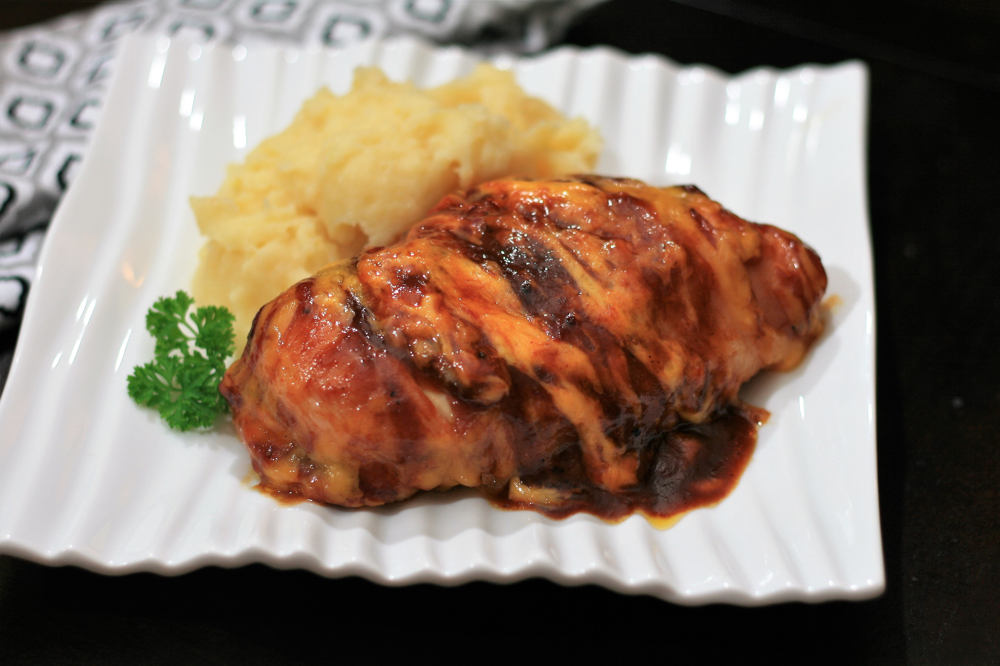

Chicken Breast Wrapped in Bacon

Description
Delicious chicken breasts wrapped in bacon and smothered with BBQ sauce and Cheddar cheese.
It's baked to perfection without any fuss, and you only need 4 ingredients!
Ingredients
- 2 skinless, boneless, chicken breast halves
- 4 slices bacon
- 1 (12 ounces) bottle barbecue sauce, or as needed
- 1 cup grated Cheddar cheese, or as needed
Steps
- Fill a small saucepan with water, add chicken, and bring to a boil.
Simmer and cook chicken for 10 minutes. Drain.
- Preheat the oven to 190 degree C.
- Wrap each chicken breast with 2 slices of bacon and place in an ovenproof baking dish.
Cover with barbecue sauce. Sprinkle with grated Cheddar cheese.
- Bake in the preheated oven until the cheese is bubbly and chicken is no longer pink in the center, about 12 minutes.